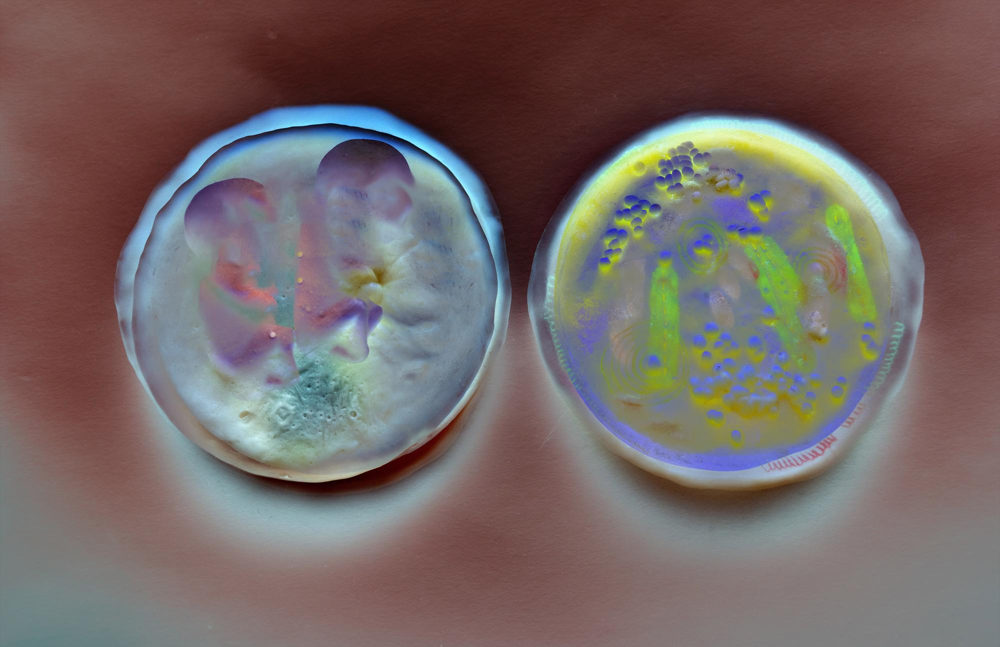
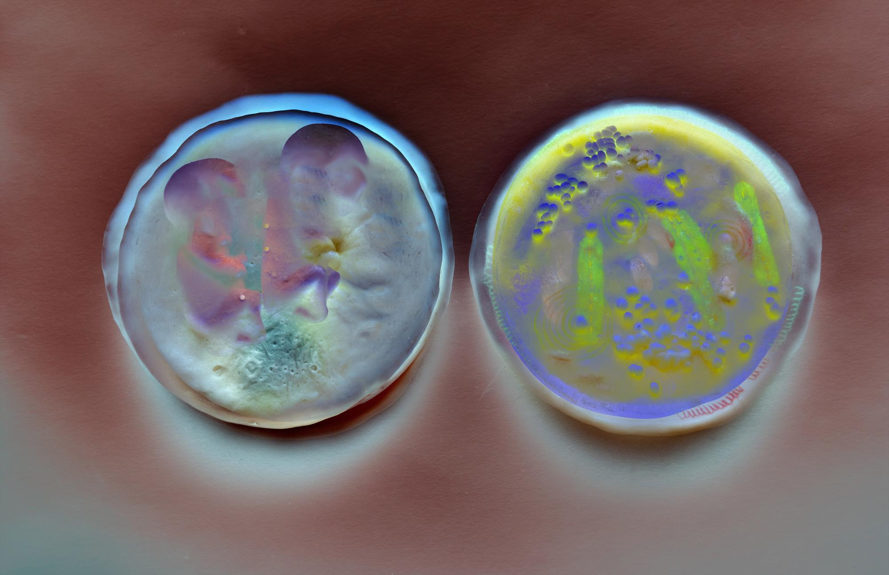
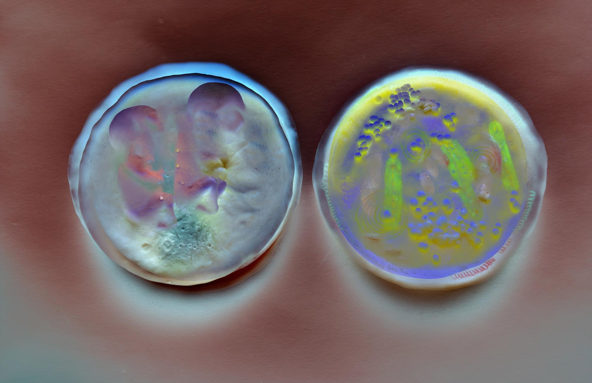

Surrogate (2019) is a complex project that explores the entanglements of reproduction, technology and bodily autonomy. At its core is a series of projects that culminate into an interactive, one-woman performance that invites the audience into the intimate and unsettling experience of becoming a remotely controlled surrogate. Through this work, artist Lauren Lee McCarthy probes urgent questions about agency, consent, and control:
How much power should we hold over the bodies of those who give birth—and over a life before it even begins?
- Surrogate
- "Lauren Lee McCarthy: What is data?" (From exhibition: Data Relations)
- "Meet the Artist: Lauren Lee McCarthy on Surrogate" (Youtube video posted by Sundance)
- Surrogate Performance
- Womb Walk
"Shock Therapy" by Brian Droitcour -
"McCarthy Swaps Stories of Saliva and Surveillance by Renée Reizman -
"Lauren Lee McCarthy – Surrogate Performance" by Elise Krentzel -
"Lauren Lee McCarthy Confronts the Boundaries of Bio-Surveillance in New Exhibit" by Erika Johnson -
"The parents could decide what I eat, what I do, when I sleep — having complete control over the body in which their baby is growing."
The initial project idea was centered around Lauren Lee McCarthy offering herself to participants as a remote surrogate, having her life managed by prospective parents through constant digital observation and real-time interaction. The beginning of this process included working with doctors, psychologists, fertility specialists, surrogates, doulas, midwives, and geneticists. Subsequently, she designed the Surrogate app, searched for sperm donor databases, completed psychological evaluations and health exams, froze her embryos, talked with family, etc.

However, at the advice and warning of medical professionals, McCarthy was prevented from following through with being a surrogate by the medical board, thus she opted into expanding her work through a series of short films, performances, and installations that tell the story of what happened.
"I walk the city with prosthetic belly, talking out loud to my virtual baby, describing everything I see. You remotely join the walk as baby, listening to my voice. You control my movements by triggering small internal kicks to the sides of my belly directing me when to turn. Together, we navigate the city, with imagined baby as interface."
In Womb Walk, McCarthy wears a prosthetic artificial womb in public space, slowly navigating through the city. The piece is tender and jarring — a maternal figure made hypervisible, her vulnerability both offered and shielded by the womb she carries. This gesture slows down time and demands space for care. The walk becomes protest — against speed, against invisibility, and against the lack of public infrastructure that supports real gestation, care, and bodily autonomy.

In the Sundance interview, McCarthy reflects on Surrogate as both a scripted performance and an improvisational experiment in care. She describes how she developed protocols — feeding, waking, watching — that turned her into a system of maternal logic.
Critics across several platforms responded strongly to McCarthy’s work. Brian Droitcour described Surrogate as “weaponizing empathy,” turning parental and health care into a tool that exposes systems of surveillance and overall reliance on technology. Renée Reizman focused on how intimate bodily exchanges — like saliva or proximity — become subversive under digital observation. Elise Krentzel emphasized how McCarthy’s own body becomes a performative site for collective motherhood. Further, Erika Johnson highlighted the collapse of distance in bio-surveillance — the watcher is now in the womb, in the home, in your walk.
Overall, the reception reveals that McCarthy’s goal was successful: she provoked discomfort, dialogue, and introspection. The projects didn’t just show us technology — they made us feel its effects on the most personal levels. Through emotional intensity and clinical structure, McCarthy accomplished something rare: she made the audience reflect on the intimacy we give away, and what it means to reclaim it.